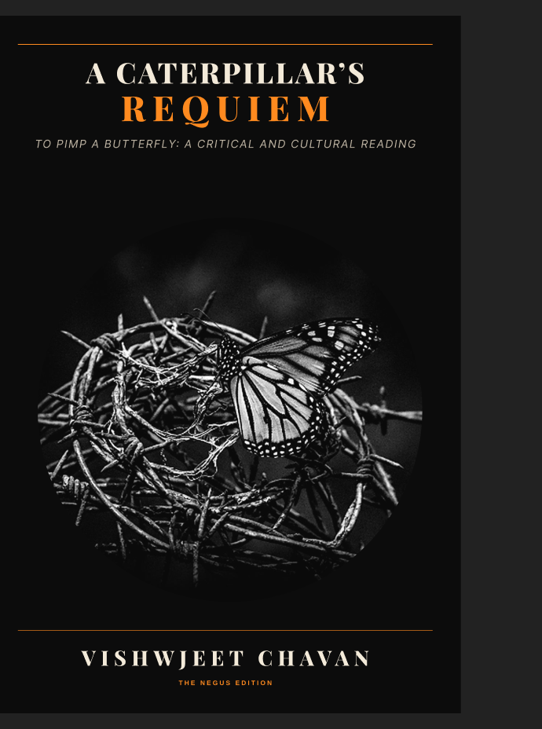

To Pimp a Butterfly
A definitive 5-Act track-by-track deconstruction of Kendrick Lamar’s 2015 magnum opus. Exploring the intricate intersections of West Coast G-funk, post-bop jazz, 400 years of Black American history, survivor's guilt, and the spiritual reckoning that defined an era.
🌍 International: Kindle eBook & Paperback launch on November 1, 2026 via Amazon.
🇮🇳 India: Paperback edition publishing via Pothi.com (Launching soon).
5-Act Structural Arc
Follows the complete psychological and sonic journey from the hedonistic trap of 'Wesley's Theory' to the hotel room collapse in 'u' and the climactic Tupac conversation.
Musicological Analysis
Deep-dives into the live arrangements of Terrace Martin, Thundercat, Robert Glasper, Kamasi Washington, and Flying Lotus.
Scholarly Lineage
Grounds the album alongside literary and cultural giants: Ralph Ellison, W.E.B. Du Bois, Wallace Thurman, and the Black Lives Matter movement.